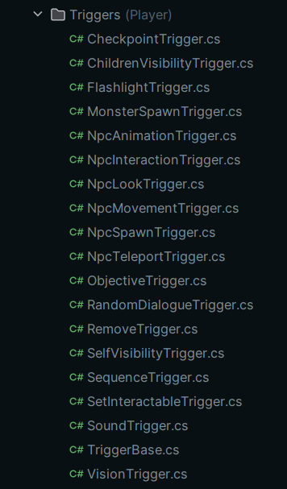

|
|
"YOU CALLED, WE ANSWERED! BUT... MAYBE WE SHOULDN'T HAVE..." |
|
|
"YOU CALLED, WE ANSWERED! BUT... MAYBE WE SHOULDN'T HAVE..." |

|
The battery goes through a few check before deciding if it should be draining or not. We start by verifying that it's actually toggled ON. It wouldn't make much sense to drain the battery while it's turned OFF. If the flashlight is ENABLED, we then check if the player is currently recharging its flashlight. If that is the case, we simply add to the current amount of battery, pulse the luminosity of the flashlight to mimic Dynamos in real life, and rotate the Hand Crank. |
If the battery is NOT actively being recharged by the player, we verify that they aren't charging a FLASH. We then freeze the battery if they are.
Then, if all of the flags listed above are set, we DRAIN the battery at a set speed, defined by a Serialized Field on the Flashlight object.
While the BATTERY is being DRAINED, we also update the LUMINOSITY of the FLASHLIGHT, as well as the battery indicator on the Player's CURSOR at the center of the screen.

|
Dialogues, Cutscenes, NPC Actions, object Animations, environmental changes, and every other scripted parts of our game go through this Logic Loop. This system allows us precise control over the length and timings of every game sequence thanks to my use of Animation Clips and Animators to handle our Sequences. This choice lets us create and add new sequences to the game in an INTUITIVE and EFFICIENT way. The logic loop present here resides in PREFAB Objects that are instantiated when needed. Before a sequence runs, we tell the game that a sequence is about to run by setting the 'Game.isInCutscene' boolean to True. This allows us to prevent certain actions from happening during longer Sequences, and it allows us to add Invisible Walls in certain areas to prevent players from getting lost. |
Once the pre-run logic is done, an Animator attached to the SequenceObject runs an Animation Clip defined in advance. This animation clip runs various Triggers and Functions used to run Cutscenes, dictate NPC Behaviors, and other things listed lower on this page.
As soon as the animation comes to an end, we make sure that the Player has been given back its ability to Move and to Look Around, as Sequences may remove both of those abilities if necessary. We then set 'Game.isInCutscene' back to False to tell the game that the Sequence is done, and we Destroy the GameObject holding the SequenceObject to not leave unnecessary objects lingering in the Game Scene.
During a sequence, multiple Functions are called to execute cetains actions with precise definable timings. Those Functions are called during the 'RUN VARIOUS TRIGGERS AND FUNCTIONS' loop on the previous Diagram just above.
Here is a complete list of every Action that can be executed by a SequenceObject during its lifecycle:
Each and every system used to progress Game Sequences and to dictate the actions of interactive elements around the player are simple by Design, as they were made to be extremely modular and easy to pick up in the long run, even by someone who isn't used to Programming.
|
 |
Each individual Trigger class only took a few minutes at most to be written; most of the work was already handled instantiated inside of the TriggerBase parent class, and I only had to make each variant inherit it and write their final "TRIGGER" method. In certain cases, the Functions I needed already existed in other systems and scripts, allowing me to simply call those instead without even requiring any extra work from me. These choices let me easily create a ton of new Trigger types without losing any time, even during the Implementation phase of our game depending on the wants and needs of the rest of the team. |
In the case of SequenceObjects, everything is contained within the SequenceObject Script itself, which only needs to be called inside of a PREFAB.
The creation of new sequences is thus trivial from a technical stand point and accessible to every member of our team, as it only requires us to create AnimationClips.
Thank you for reading all the way through!
Click the link below to go back to the HOME Page.